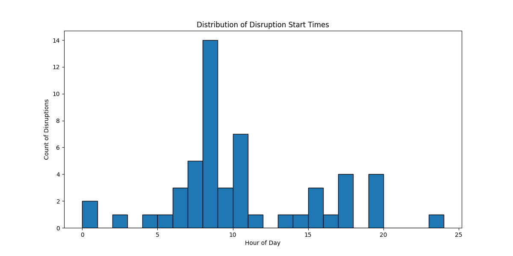

Weekly Urban Mobility Analysis
Published on: 2025-01-22
Introduction
Welcome to our weekly urban mobility analysis focusing on road disruptions in London. This analysis aims to provide insights into the severity, timing, and location of disruptions to help in planning and understanding urban mobility issues.
Analysis Summary
Severe disruptions: There are 18 severe disruptions this week.
- Moderate: [A1205] Burdett Road (Both directions) between Thomas Road and Agnes Street - A contraflow is in place due to Thames Water works.
- Moderate: Canning Town Flyover Refurbishment Works - [A13] Newham Way (Both directions) between [A13] East India Dock Road and Beckton Road - Lane closures and restrictions in place for flyover refurbishment works. Thursday 23 January two lanes closed in both directions (2200-0600) Friday 24 and Saturday 25 January, East India Dock Tunnel, closed eastbound between 21:00 and 08:00 each night and A13 reduced to one lane westbound.
- Moderate: [A3] West Hill (All directions) at the junction of [A205] Upper Richmond Road - Temporary signals in operation to facilitate repairs to a burst water main.
- Moderate: [A240] Kingston Road (All approaches) at the junction of Jubilee Way - Temporary traffic signals are in place due to vandalism on the ULEZ camera network.
- Moderate: [A3] Hook Rise South (Westbound) at the junction of [A243] Hook Road - Lane one (of two) is closed due to works.
- Moderate: [A4] Great West Road (All approaches) at the junction of Clayponds Lane - Lane restrictions and Clayponds Avenue is closed due to Cadent Gas Works.
- Moderate: [A406] North Circular Road (Westbound) at the junction of [A1] Great North Way - There are lane restrictions due to a collision at this location
- Moderate: [A41] Baker Street (Both directions) at the junction of Blandford Street - Temporary traffic signals are in use to facilitate Utility works.
- Moderate: King William Street (Southbound) at the junction of Lombard Street - Road closed to facilitate urban realm works.
- Moderate: [A201] New Bridge Street (Southbound) between Fleet Street and Tudor Street - Road closure to facilitate gas works from 06 January to 22 March.
- Moderate: [A501] Euston Road (Both directions) at the junction of [A4200] Upper Woburn Place - TfL drainage works - starts Upper Woburn Place, with temporary signals and will then progress onto Euston Road with lane restrictions to Gower Street.
- Moderate: Battersea Bridge Road - [A3220] Battersea Bridge Road (Both directions) at the junction of Petworth Street - Road restricted due to the Battersea Bridge Safety Improvements Scheme works.
- Moderate: [A1000] Great North Road (Both directions) at the junction of Lyonsdown Road - There are temporary traffic lights at this location while a utilities company carries out works.
- Moderate: [A404] High Road (Both directions) at the junction of [B4565] Wembley Hill Road - Temporary traffic signals in place to facilitate roadworks.
- Moderate: Silvertown Tunnel project, Greenwich Peninsula - Various restrictions during Silvertown Tunnel-related works until 2025. Millennium Way is currently closed. There are associated lane closures on the northbound A102 Blackwall Tunnel Southern Approach. https://tfl.gov.uk/travel-information/improvements-and-projects/silvertown-tunnel for More information.
- Moderate: [A118] High Street (All approaches) at the junction of [A11] Bow Road - Lane closures on all approaches and on the roundabout, and closure of the link road under the flyover due to Sivertown Tunnel works.
- Moderate: Silvertown Tunnel Scheme - Preston's Roundabout - [A1206] Prestons Road Roundabout (All directions) between [A1206] Prestons Road and [A1261] Aspen Way - Lane restrictions are in place to facilitate Silvertown Tunnel related works.
- Moderate: [A5200] Grays Inn Road (Southbound) at the junction of [A5201] Clerkenwell Road - Lane closures to facilitate Local Authority improvement works.
Impact Analysis by Severity:
- Moderate: 18 disruptions
- Minimal: 34 disruptions
Dashboard
Explore our interactive dashboard for real-time disruption analysis:
Map of Road Disruptions in London
Visualizations
Time Series of Disruptions
Conclusion
Based on the analysis, we observe that the majority of disruptions occur during peak hours, and severe disruptions are more frequent than anticipated. This map and data visualization help in understanding the spatial distribution and severity of these disruptions, aiding in better urban planning and traffic management strategies.